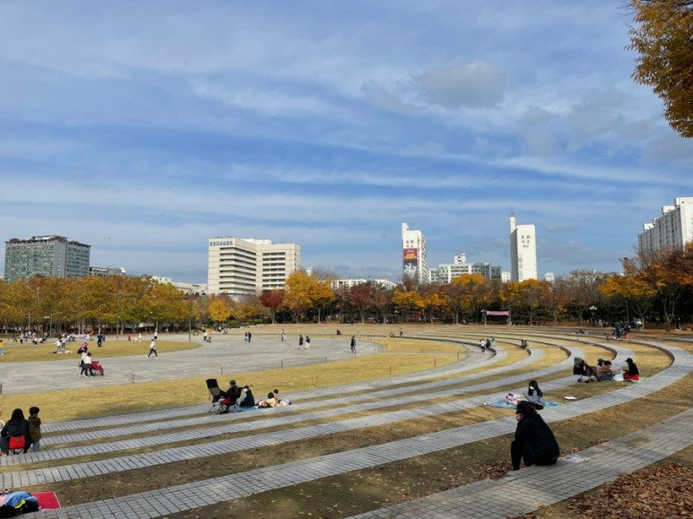

최정우의 HTML5 학습
github
kosa
google
나의 소개
이름 : 최 정우
별명 : 정우 최
관심기술 : HTML5
취미 : 롤
올해 재미있게 읽은 책
제목
장르
이것이 자바다
컴퓨터
자바의 정석
컴퓨터
자바의 정석2
컴퓨터
자랑하고 싶은
우리동네
의 아름다운 곳
평촌 중앙공원(평촌에 있는 대표적인 공원: 나무도 많고 사람도 많고 넓다. 친구와 가족과 함께 오기 좋다.)

평촌 중앙공원의 모습이다.